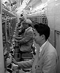

97.7.7（月）岡山 広島
9時30分、ホテルを出発。
徳山さんとはここでお別れ。入れ替わりにスタジオジブリの米沢さんが合流する。
岡山東宝にて合同取材。ディダラボッチ登場
じっと出番を待つディダラボッチ。このままの姿で30分。しかも出番は約1分。岡山テレビ「あいらぶYOU」、山陽放送テレビ「ハマイエてれび」の2本収録。
伴田さんは昨日の焼肉が腹に残っていて、気分がすぐれない様子。更に公開前日のスケジュールにつき、問題が発生。伴田さんの苦悩の色が濃くなる。東宝関西の孫悟空こと豊田さん、日本テレビの奥田プロデューサーと鳩首会談するも名案出ず。
東宝関西の孫悟空こと豊田さん、右は鈴木さんが描いた豊田さんの似顔絵岡山から広島へ移動し、まずホテルへ。ここであの「映画興行師」、東宝関西興行の前田さんの出迎えをうける。本に書かれたそのままのイメージの人で、本当に心遣いが細やかな人との印象を受ける（米沢談）。見かけはやーさんみたいでこわい（伴田談）。
「映画興行師」の前田さんです「カレーが食べたい」という鈴木プロデューサーのリクエストでホテルの喫茶店へ入り、全員でカレーを注文。ここで出てきた薬味がなぜか大好評、らっきょうは大盛りでおかわりしたにもかかわらず、全部食べ尽くしてしまった。食後、駅前でパチンコ屋を探し歩いたが見つからず、しばし彷徨。街で「もみじ饅頭」の製造実演（但し機械）をじっとみていた監督は、機械からアンコが出ていないのを見て店に入り「アンコが入ってない種類もあるのですか」と店員に尋ねる。「あれは実演用で販売用ではないのでアンコが入っていない」とのこと。「もったいないじゃないか」と監督はぶつぶつ。
中国新聞取材。
「もみじ饅頭」製造実演の前で
広島テレビ「テレビ宣言」収録。
広島宝塚劇場にて、舞台挨拶があるのだが時間が空いたので、「孫くん」以外の人はパチンコ屋へ向かう。（ちなみに「孫くん」は雨が降り出してきたため、全員の傘を買いに走る。下っ端ゆえの悲運。）米沢さんは生まれてはじめてのパチンコで、何が何だかわからないまま玉をはじいていたが、結果はよく当たるパチンコ屋で全員フィーバー。戻る時間になっても、鈴木プロデューサーはフィーバーが止まらず「先に行ってて」ということなので、他の人は鈴木プロデューサーを置いて、劇場に直行。
広島宝塚劇場にて舞台挨拶。 
フィーバーする宮崎監督と伴田さん
そのまま劇場で広島テレビ「こちらマル○生活研究所」の収録。
監督少々疲れ気味。お好み焼きでも食べに行こうと思っていたら、「ちょっと、まあちょっと」と前田さんに言われるまま、おすすめのお店に連れられて行ってしまった。広島の郷土料理を出してくれるお店で、新鮮な魚づくしで疲れも吹っ飛ぶ。前田さんは「わしはいつも食べてるからええんじゃ」と米沢さんに自分の分まで食べさせていた。でも、「いつも人に勧めていて、一体前田さんはいつ食べるんだろう」と鈴木プロデューサーは素朴な疑問を抱く。
お店に向かう途中、ファンとおぼしきおじさんが「高畑監督、娘がファンなんです。サインください」と近づいてきた。宮崎監督はおもむろにサインした後、一言「僕は宮崎です」。
その後、ホテルで解散。伴田さんは部屋で「孫くん」と関西支社の貝谷さんの3人でお酒を飲みながら夜のミーティングを開いたということでした。
| 次のページへ |
| はじめのページに戻る |
| 「もののけ姫」トップページへ戻る |